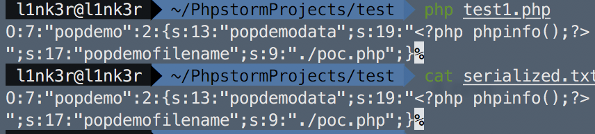
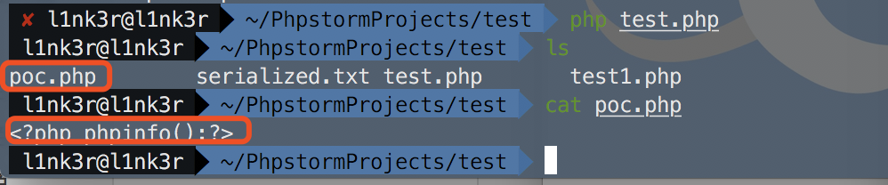
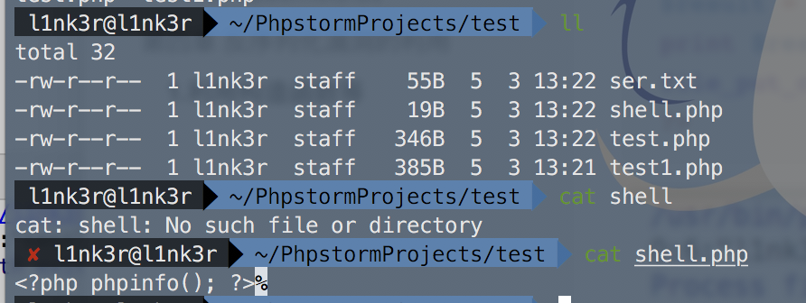
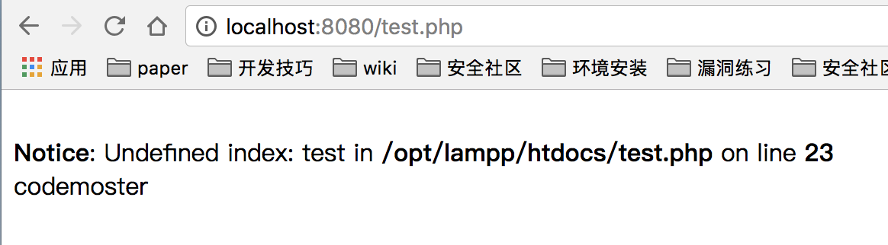
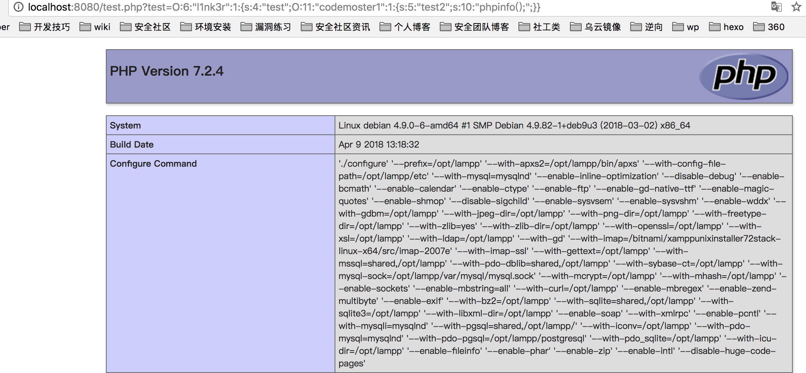

php反序列化漏洞总结
序列化和反序列化
为了有效存储和传递数据同时不丢失类型和结构 需要利用序列化和反序列化函数对数据进行处理
序列化函数返回字符串 字符串包含了表示值的字节流可以存储于任何地方
反序列化函数对于单一的已序列化的变量进行操作 将其转换为原来的值
二者结合可以轻松存储数据 使程序更具维护性
序列化
serialize函数
是序列化函数，序列化对象时 PHP在序列化动作之前调用成员函数__sleep 这样就允许对象在被序列化之前做任何清除操作。
类型字母详解:
1 | a - array |
boolean
1 | b:; |
integer
1 | i:; |
double
1 | d:; |
NULL
1 | N; //NULL |
string
1 | s::""; |
array
1 | a::{key, value pairs}; |
类
1 | O:4:"Test":2:{s:1:"a";s:5:"Hello";s:1:"b";i:20;} |
注：对象的私有成员具有加入成员名称的类名称;受保护的成员在成员名前面加上’*’。这些前缀值在任一侧都有空字节。
所以在传入序列化字符串的时候，需要补齐这些空字节。如：
1 | O:4:"test":1:{s:10:"%00test%00flag";s:6:"Active";} |
反序列化
unserialize
是反序列化函数，若被序列化的变量是一个对象，重新构造对象之后会自动调用__wakeup成员函数
举个例子：
1 | <?php |
这串代码，我们可以看到变量$a从url中test参数获取到内容，并且在反序列化的时候通过__destruct()直接将传入的数据不经过任何处理，echo出来，这里就存在反射型xss漏洞了。
在反序列化中,我们所能控制的数据就是对象中的各个属性值,所以在PHP的反序列化有一种漏洞利用方法叫做 “面向属性编程” ,即 POP( Property Oriented Programming)。和二进制漏洞中常用的ROP技术类似。在ROP中我们往往需要一段初始化gadgets来开始我们的整个利用过程,然后继续调用其他gadgets。在PHP反序列化漏洞利用技术POP中,对应的初始化gadgets就是__wakeup() 或者是__destruct() 方法, 在最理想的情况下能够实现漏洞利用的点就在这两个函数中,但往往我们需要从这个函数开始,逐步的跟进在这个函数中调用到的所有函数,直至找到可以利用的点为止。
漏洞利用
1.unserialize函数的参数可控
2.存在魔法函数
总结几个常用魔术方法及触发条件。
1 | __wakeup() //使用unserialize时触发 |
1.几个可用的POP链方法
命令执行：
1 | exec() |
文件操作：
1 | file_put_contents() |
如果在跟进程序过程中发现这些函数就要打起精神,一旦这些函数的参数我们能够控制,就有可能出现高危漏洞.
2.POP链demo示例
1 | <?php |
这是一个很简单的示例代码，且这个代码存在反序列化漏洞。该文件还定义了一个 popdemo 类,并且该类实现了 __wakeup 函数,然后在该函数中又调用了save函数，且参数对象是文件名。跟进save函数，我们看到在该函数中通过调用file_put_contents函数，这个函数的$filename和data属性值是从save函数中传出来的，并且创建了一个文件。由于__wakeup()函数在序列化时自动调用，这里还定义了一个保存文件的函数，在这个反序列化过程中对象的属性值可控。于是这里就存在一个任意文件写入任意文件内容的反序列化漏洞了。这就是所谓的POP。就是关注整个函数的调用过程中参数的传递情况,找到可利用的点,这和一般的Web漏洞没什么区别,只是可控制的值有直接传递给程序的参数转变为了对象中的属性值。
利用poc：
1 | <?php |
这里定义了$data和$filename，然后序列化字符串后存储到serialized.txt文件中，序列化字符串：

然后运行demo代码，会在同目录下生成一个poc.php

反序列化漏洞的利用
1.利用构造函数等
php在使用unserialize()后会导致__wakeup() 或__destruct()的直接调用，中间无需其他过程。因此最理想的情况就是一些漏洞/危害代码在__wakeup() 或__destruct()中，从而当我们控制序列化字符串时可以去直接触发它们。
1 | <?php |
这里代码主要是通过get方法通过test传入序列化好的字符串，然后在反序列化的时候自动调用__wakeup()函数，在__wakeup()函数中通过new pocdemo()会自动调用对象pocdemo中的__construct()，从而把<?php phpinfo(); ?>写入到shell.php中。
poc代码：
1 | <?php |
 然后将这个序列化的字符重新导入到poc代码中，反序列化之后，就会生成一个shell.php,并且内容为
然后将这个序列化的字符重新导入到poc代码中，反序列化之后，就会生成一个shell.php,并且内容为<?php phpinfo(); ?>

存在漏洞的思路：一个类用于临时将日志储存进某个文件，当__destruct被调用时，日志文件将会被删除，比如：
1 | <?php |
调用这个类：
1 | <?php |
GET[‘usr_serialized’]);$_GET[‘usr_serialized’]是可控的，那么我们就可以构造输入删除任意文件
构造输入删除目录下的index.php文件：
1 | <?php |
接下来先进入index.php：
接下来尝试使用test7.php删除了index.php，进入test7.php:
现在在目录里已经没有了index.php:
我们再次访问一下test7.php试一试：
index.php已经没有了。
这是一个简单的示例。
常见的注入点
上一部分展示了由于输入可控造成的__destruct函数删除任意文件，其实问题也可能存在于__wakeup、__sleep、__toString等其他magic函数，一切都取决于程序逻辑。比如，某用户类定义了一个__toString，为了让应用程序能够将类作为一个字符串输出（echo $object），而且其他类也可能定义了一个类允许__toString读取某个文件。
现在开始这个小实验，代码如下：
1 | <?php |
我们先访问test8.php，结果如下：
1 | <?php |
接下来我们出发反序列化漏洞，获取hello.txt的内容：
构造url：
1 | http://localhost/test9.php?usr_serialized=O:9:%22fileclass%22:1:{s:8:%22filename%22;s:9:%22hello.txt%22;} |
访问：
可以看到hello.txt的内容：
2.利用普通成员方法
在反序列化的时候，当漏洞/危险代码存在类的普通方法中，就不能指望通过“自动调用”来达到目的了。这时的利用方法如下，寻找相同的函数名，把敏感函数和类联系在一起。
1 | <?php |
从代码上来看，来通过new 实例化一个新的l1nk3r对象后，调用__construct()，其中该函数又new了一个新的CodeMonster对象；这个对象的功能是定义了action()函数，并且打印CodeMonster。然后结束的时候调用__destruct(),在__destruct()会调用action()，因此页面会输出CodeMonster。

但是在代码中，我们看得到codermaster1对象中有一个eval()函数，这可是危险函数啊，那有什么方法，通过发序列化触发它呢，当然有了。刚刚在l1nk3r对象中，new的是CodeMonster，如果new的是CodeMonster1，那么自然就会进入CodeMonster1中，然后eval()函数中的$test2可控制，那么自然就可以实现远程代码执行了。
Poc：
1 | <?php |
生成的序列化字符串：
1 | O:6:"l1nk3r":1:{s:4:"test";O:11:"CodeMonster1":1:{s:5:"test2";s:10:"phpinfo();";}} |

查找反序列化漏洞及构造exploit的方法
前置知识
PHP的 unserialize() 函数只能反序列化在当前程序上下文中已经被定义过的类.在传统的PHP中你需要通过使用一大串的include() 或者 require()来包含所需的类定义文件。于是后来出现了 autoloading 技术,他可以自动导入需要使用的类,再也不需要程序员不断地复制粘贴 那些include代码了。这种技术同时也方便了我们的漏洞利用.因为在我们找到一个反序列化点的时候我们所能使用的类就多了,那么实现漏洞利用的可能性也就更加高。
还有一个东西要提一下,那就是Composer,这是一个php的包管理工具,同时他还能自动导入所以依赖库中定义的类。这样一来 unserialize() 函数也就能使用所有依赖库中的类了,攻击面又增大不少。
1.Composer配置的依赖库存储在vendor目录下
2.如果要使用Composer的自动类加载机制,只需要在php文件的开头加上
require __DIR__ . '/vendor/autoload.php';
漏洞发现技巧
默认情况下 Composer 会从 Packagist下载包,那么我们可以通过审计这些包来找到可利用的 POP链。
找PHP链的基本思路.
1.在各大流行的包中搜索 __wakeup() 和 __destruct() 函数.
2.追踪调用过程
3.手工构造 并验证 POP 链
4.开发一个应用使用该库和自动加载机制,来测试exploit.
构造exploit的思路
1.寻找可能存在漏洞的应用
2.在他所使用的库中寻找 POP gadgets
3.在虚拟机中安装这些库,将找到的POP链对象序列化,在反序列化测试payload
4.将序列化之后的payload发送到有漏洞web应用中进行测试.
 wechat
wechat alipay
alipay